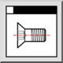

Това е автоматичен превод.
Лентата с инструменти / Икона:

Меню: Вижте > Библиотечен браузър
Кратък път: G, L
Команди: gl
Библиотеките на частите в QCAD са колекции от символи и други чертожни
файлове, които могат да се използват във вашите чертежи. За да вмъкнете елемент
от библиотека за части, трябва първо да покажете браузъра на библиотеката, като
използвате този инструмент.
Частите могат да се вмъкват в чертежа ви чрез плъзгане и пускане. След
като курсорът на мишката е в областта на чертежа, можете да използвате
обикновените инструменти за прихващане, за да позиционирате вмъкнатата част, и
лентата с инструменти за опции, за да мащабирате, обръщате или завъртате
частта.